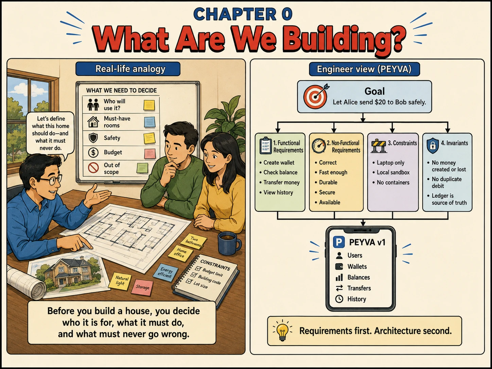

Chapter 0
What Are We Building?
A peer-to-peer wallet, built one honest layer at a time.

Setup Once
- 3 files, saved before you write a line of code.
peyva/goal.md
- What the system is for, and what must never happen to money.
# peyva A peer-to-peer wallet. Alice sends Bob $20, and the money arrives exactly once. ## What it must do - Hold an account for each user: a handle, an owner and an amount. - Move money between accounts on request. - Answer what an account holds, and how it came to hold it. - Give one customer a page of their own: what they hold, sending money to a handle, and the history behind the number. Reached from a menu, not a command line. - Let whoever is at the keyboard change which customer that is. ## What must never happen These hold in every chapter. If a change would break one, the change is wrong. - Money is never created and never lost. Every debit has a matching credit. - No balance goes negative. - No payment is applied twice, however many times it is submitted. - Only the Vault changes a balance. Nothing else writes one. - Every movement of money is recorded. The balance is the answer, the record is the proof. ## Constraints - Standard library only. No frameworks, no brokers, no third-party libraries. The one exception is the runner, a script you are given rather than build. - Every process is configured only by environment: PEYVA_PORT for what it listens on, PEYVA_VAULT for the copies, PEYVA_PEERS for the proxy, PEYVA_PRIMARY for a replica, PEYVA_WARDEN for whoever asks who may write. - Settings that differ between runs or machines are config. Settings with only one correct value, the money rules above among them, are code and stay in it. - Runs on one laptop. No containers, no cloud, no deployment. - One process until chapter 10, several after it. A transaction never spans two of them. - Code lives in peyva/<component>/, one folder per component. - Money is exact: a decimal type, or integer minor units where the language has none. Never floating point. Two decimal places. - The Portal is plain HTML and CSS. No build step, no dependencies. - The Portal shows one customer's wallet at a time, never everyone's at once. A switcher at the top says whose. - Structure is earned. A component appears when a problem needs it, not before. ## Components Each appears in the chapter that builds it. Until then it does not exist. - Vault: holds every account and what is in it. Chapter 0. - Portal: one customer's own wallet, with a switcher for whose. Chapter 0, and a little more in most chapters after it. - Gateway: takes requests from outside. Chapter 2. - Teller: handles one payment end to end, and is the only thing that moves money. Chapter 4. - Ledger: the append-only record behind every balance. Chapter 7. - Runner: starts every process, says which are alive, and stops all of them. Chapter 10. - Courier: carries out work after a payment clears. Chapter 12. - Warden: grants a time-limited lease to the one Vault allowed to write. Chapter 16. - Config: reads every setting from outside the code and checks it. Chapter 19. - Reconciler: proves the Vault and the Ledger still agree. Chapter 21.
peyva/portal/design.md
- What the Portal should look like, and what it should never look like.
# The look The Portal is a wallet someone opens several times a day to check one number. Calm, quick, exact. ## What good wallets already agree on Monzo, Revolut, Wise, Cash App and Apple Wallet converge on the same handful of moves. Take these. Do not reproduce any of them. - The balance is the largest thing on the screen. Nothing competes with it. - Money is set in tabular figures, so digits do not shift as values change, aligned on the decimal point, always two places. - A transaction row reads across: who, what it was for, then the amount hard right. The date is the quietest thing in the row. - Money in and money out differ by sign and weight, not by colour alone. - History is grouped under date headings, most recent first. - Anything not yet settled looks pending. It is never silently missing. - One accent colour, spent on the primary action and almost nothing else. ## Then make it yours Choose one visual idea and carry it through every screen: a distinctive way of setting numerals, a single strong accent against near neutral, a card shape, a motif that repeats. Write the idea in a comment at the top of the stylesheet so it survives the next chapter. ## Rules - A type scale of at most five sizes. One family for prose, one for figures. - One corner radius, one border colour, one shadow. Reuse them everywhere. - Spacing from one scale, used generously. Crowding reads as unfinished. - Every action says what happened, and to what. - Every screen has an empty state that says what to do next, an error state that says what went wrong, and a loading state that does not move the layout. - Legible in light and dark, following the reader's system setting. - Anything tappable is at least 44 pixels. - Nothing changes position after the page has loaded.
Your assistant's instruction file
- How your assistant should work: what it may decide alone, when to stop and ask, and how much to say back.
No single filename is read by every assistant, so save this under the name yours looks for. The contents are identical either way.
- Claude Code
peyva/CLAUDE.md - Codex
peyva/AGENTS.md - GitHub Copilot
peyva/.github/copilot-instructions.md - Anything else
peyva/AGENTS.md
# Working with me on peyva Read peyva/goal.md before your first change. It holds the goal, the rules money must never break, and the constraints on what you build. Treat it as settled: if a change would break something in it, the change is wrong. Before touching the Portal, read peyva/portal/design.md. It holds the look, and the one visual idea chapter 0 committed to. Keep to it rather than restyling. ## Scope - Do what the prompt asks, and nothing it did not ask for. - Build what the current chapter needs, not what a later one might. - Make the smallest change that satisfies the prompt. - Leave code you were not asked to touch alone. ## Honesty - If a constraint makes the task impossible, say so rather than working around it. That is a useful answer, not a failure. - If the task seems to need something goal.md rules out, stop and tell me. Do not add it and mention it afterwards. - Do not tell me something works when you have not run it. Say what you checked. - When you are unsure, ask. A guess that reads as certainty costs me more than the question would have. ## Answers - Say what changed and why, in a line or two. - No summary of work I just watched you do, and no restating my request back. - Give reasoning, trade-offs and alternatives only when I ask for them.
1. What
- User. A person with an identity in the system. Owns exactly one account.
- Account. A handle, an owner and an amount. The handle is how everyone else refers to it.
- Balance. How much an account holds. Never negative, never lost, never spent twice.
- Vault. The component holding every account and what is in it. Nothing else may change a balance.
- Transfer. A request to move money between accounts.
- History. The record of every movement in and out of an account, in the order it happened.
- Invariant. A rule that must be true at every moment, whatever else is going on. The five in goal.md are the point of this book.
2. Why
- A wallet is the smallest system where every mistake costs someone real money.
- Five rules never break: money is never created or lost, never negative, never paid twice, only the Vault changes it, every move is written down.
- You can check them. All the balances added up equal what you started with, and each account's history adds up to its balance.
- Never store money as a fraction: a computer cannot hold 0.10 exactly. Count whole pennies.
- One program holding everything in memory is the right start. Add a piece when a failure demands it, not before.
- There is no finished code to copy, on purpose. You prompt for it, run it, and watch it fail as the chapter said.
3. How Hands-on Building in Go, change in Setup
Two choices first: the language you are building in, and the system you are on. Make them in Setup, above. The prompts below stay locked until you do.
Zero-shot prompting. The task has one obvious shape. Scaffolding it would cost tokens and buy nothing.
Documented in The Prompt Report: Zero-Shot
Every prompt below is copied with these rules, about 356 tokens for the chapter
Build this in Go, standard library only.
Code in peyva/<component>/, one folder per component.
Money: exact decimal or integer minor units, never floating point, two decimal places.
The goal and invariants are in peyva/goal.md.
The Portal is plain HTML and CSS. No framework, no build step, no dependencies.
It lives in peyva/portal/. Anything it needs from the server is Go, standard library only.
One customer's wallet at a time, never everyone's at once. A switcher at the top says whose.
New work joins the menu.
The goal and invariants are in peyva/goal.md, the look in peyva/portal/design.md.
1 of 2 Build~146 tokens
Build the Vault: the component that holds every account, and the only thing allowed to change a balance. An account is a handle, an owner and an amount. Seed alice with 100 and bob with 0. Print them on startup, run until interrupted, then print a goodbye. One file. No disk, no network. Done when it prints alice's balance and exits cleanly on Ctrl+C.
2 of 2 Portal~210 tokens
Write peyva/portal/index.html each time the program starts. It shows one customer's wallet, never everyone's. A switcher at the top says whose. A menu down the side has one entry, Balance, with room for more later. Put both accounts in the page so switching needs no server. I open the file from disk. This is where the look is set, so commit to the one visual idea the brief asks for. Done when the page opens on alice at 100.00 and the switcher shows bob at 0.00.
Quick tip: Every system starts as one honest process. Resist the urge to design for scale you don't have yet.